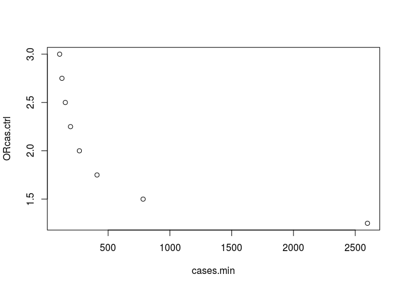

Calculate sample size and post-hoc power of association studies involving mitochondrial DNA haplogroups - Based on Samuels et al. AJHG, 2006. 78(4):713-720. DOI:10.1086/502682
Installation
- From CRAN:
install.packages("mthapower")- From GitHub:
# install.packages("devtools")
devtools::install_github("aurora-mareviv/mthapower")Shiny app
- Run in Shinyapps.io: mtDNA_power_calc
- Run locally from Gist:
# install.packages("shiny")
shiny::runGist('5895082')Examples
Sample size estimation
- Determine the minimum number of cases (
Ncmin), required to detect: either a change fromp0(haplogroup frequency in controls) top1(haplogroup frequency in cases), or a given OR, with a predefined confidence interval, in a study withNhhaplogroups.
library(mthapower)
library(dplyr)
mydata <- mthacases(p0=0.445, Nh=11,
OR.cas.ctrl=c(2), power=80,
sig.level=0.05) # Baudouin study
mydata <- mthacases(p0=0.445, Nh=11,
OR.cas.ctrl=c(1.25,1.5,1.75,2,2.25,2.5,2.75,3),
power=80, sig.level=0.05)
mydata <- mydata[c(2,6)]
mydata %>%
knitr::kable()| cases.min | ORcas.ctrl |
|---|---|
| 2598.580 | 1.25 |
| 782.882 | 1.50 |
| 410.041 | 1.75 |
| 267.193 | 2.00 |
| 195.428 | 2.25 |
| 153.394 | 2.50 |
| 126.216 | 2.75 |
| 107.388 | 3.00 |
plot(mydata)
Power estimation
- For a given study size, determine the minimum effect size that can be detected with the desired power and significance level, in a study with
Nhhaplogroups.
# Example 2a:
# library(mthapower)
pow <- mthapower(n.cases=203, p0=0.443, Nh=13, OR.cas.ctrl=2.33, sig.level=0.05)
pow %>%
knitr::kable()| Nh | ncases | p0 | p1 | OR.ctrl.cas | OR.cas.ctrl | power | sig.level |
|---|---|---|---|---|---|---|---|
| 13 | 203 | 0.443 | 0.65 | 0.429 | 2.33 | 82.759 | 0.05 |
# Example 2b:
# Create data frames
pow.H150 <- mthapower(n.cases=seq(50,1000,by=50), p0=0.433, Nh=11,
OR.cas.ctrl=1.5, sig.level=0.05)
pow.H175 <- mthapower(n.cases=seq(50,1000,by=50), p0=0.433, Nh=11,
OR.cas.ctrl=1.75, sig.level=0.05)
pow.H200 <- mthapower(n.cases=seq(50,1000,by=50), p0=0.433, Nh=11,
OR.cas.ctrl=2, sig.level=0.05)
pow.H250 <- mthapower(n.cases=seq(50,1000,by=50), p0=0.433, Nh=11,
OR.cas.ctrl=2.5, sig.level=0.05)
# Bind the three data frames:
bindata <- rbind(pow.H150,pow.H175,pow.H200,pow.H250)
# Adds column OR to binded data frame:
bindata$OR <- rep(factor(c(1.50,1.75,2,2.5)),
times = c(nrow(pow.H150),
nrow(pow.H175),
nrow(pow.H200),
nrow(pow.H250)))
# Create plot:
# install.packages("car")
library(car)
scatterplot(power~ncases | OR, reg.line=FALSE,
smooth=FALSE, spread=FALSE,
boxplots=FALSE, span=0.25, by.groups=FALSE,
data=bindata)